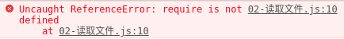

没有BOM和DOM.js
- 在 Node 中，采用 EcmaScript 进行编码
- 没有 BOM、DOM
- 和浏览器中的 JavaScript 不一样
console.log(window)
console.log(document)
$node 01-没有bom和dom.js
ReferenceError: window is not defined
ReferenceError: document is not defined
测试结果：报错
使用 require 方法加载 fs 核心模块
浏览器中的 JavaScript 是没有文件操作的能力的
- 但是 Node 中的 JavaScript 具有文件操作的能力
- fs 是
file-system的简写，就是文件系统的意思 - 在 Node 中如果想要进行文件操作，就必须引入 fs 这个核心模块
- 在 fs 这个核心模块中，就提供了所有的文件操作相关的 API
- 例如：
fs.readFile就是用来读取文件的
var fs = require('fs')
读取文件
第一个参数就是要读取的文件路径
- 第二个参数是一个回调函数
- 成功
- data 数据
- error null
- 失败
- data undefined没有数据
- error 错误对象
- 成功
fs.readFile('./data/a.txt', function (error, data) {
// console.log(data)
// console.log(error)
// console.log(data)
// 在这里就可以通过判断 error 来确认是否有错误发生
if (error) {
console.log('读取文件失败了')
} else {
console.log(data.toString())
}
})
如果不加data.toString()，则会出现以下乱码
<Buffer 68 65 6c 6c 6f 20 6e 6f 64 65 6a 73 0d 0a>
- 文件中存储的其实都是二进制数据 0 1
- 这里为什么看到的不是 0 和 1 呢？原因是二进制转为 16 进制了
- 但是无论是二进制01还是16进制，人类都不认识
- 所以我们可以通过 toString 方法把其转为我们能认识的字符
读取文件.js
var fs = require('fs')
fs.readFile('./data/a.txt', function (error, data) {
if (error) {
console.log('读取文件失败了')
} else {
console.log(data.toString())
}
})
浏览器是不认识node代码的.html
<!DOCTYPE html>
<html lang="en">
<head>
<meta charset="UTF-8">
<title>Document</title>
</head>
<body>
<!-- <script src="00-helloworld.js"></script> -->
<!-- <script src="01-没有bom和dom.js"></script> -->
<script src="02-读取文件.js"></script>
</body>
</html>
